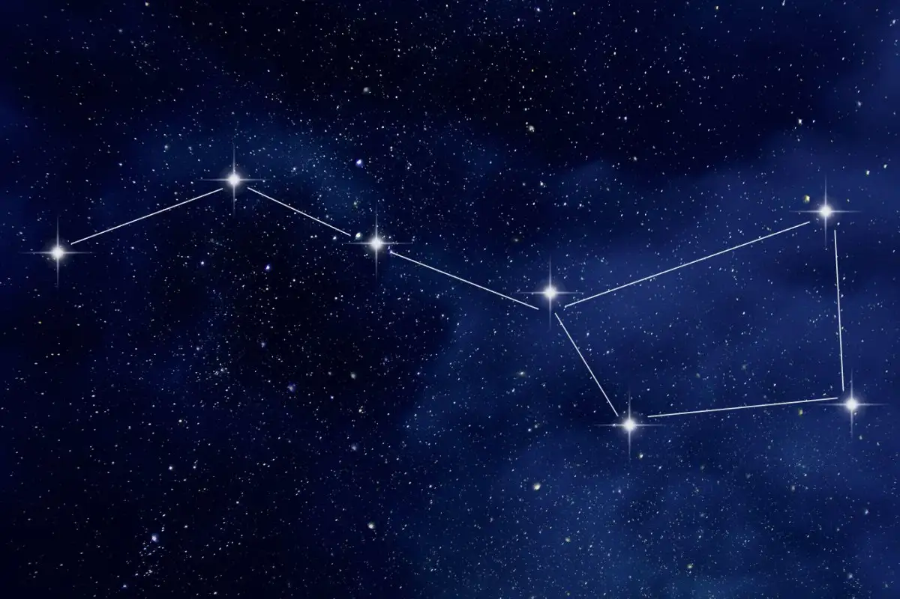

Constellations are groups of stars that form patterns in the sky. The stars themselves, while not actually connected, resemble shapes when linked together. Numerous cultures across history have looked to the stars, seeing different objects, people, animals, and stories within them. NASA summary on constellations.